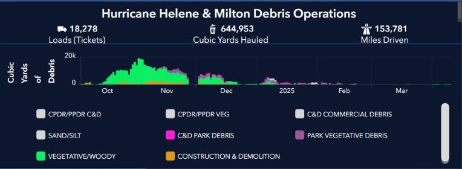
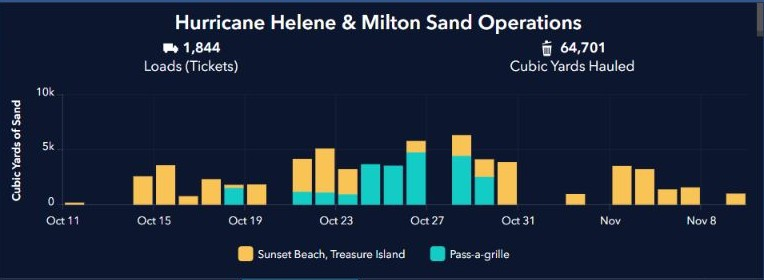
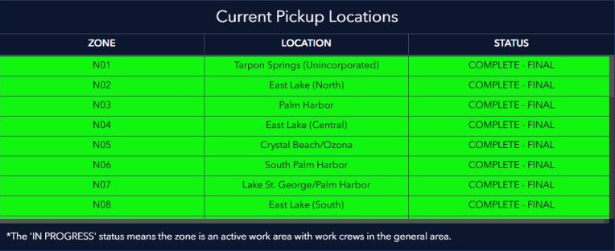

← Nine priority figures · St. Petersburg retrospective figures
Original Pinellas County dashboard figures
These are screenshots of the figures displayed in the Pinellas County Public Works Hurricane Debris Management dashboard, captured November 2, 2026. They preserve the county's chart and map appearance. The live dashboard can change; use the source link for its current data and interactive controls.
The first chart uses pickup tickets. The sand chart uses a separate sand-ticket layer. The two estimate charts use a separate zone-estimate layer. Their numbers should not be added to or compared directly with the nine figures from our pickup-ticket extract without checking the source definitions.
1. Load Ticket Chart


2. Sand Ticket Chart


3. Estimated Remaining Debris


4. Estimated Initial Debris


5. Debris Pickup Status by Zone map

Other dashboard display: Current Pickup Locations
